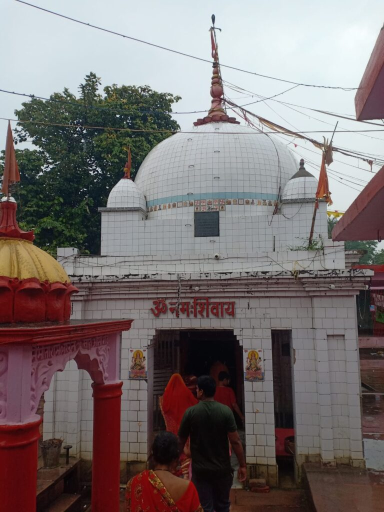
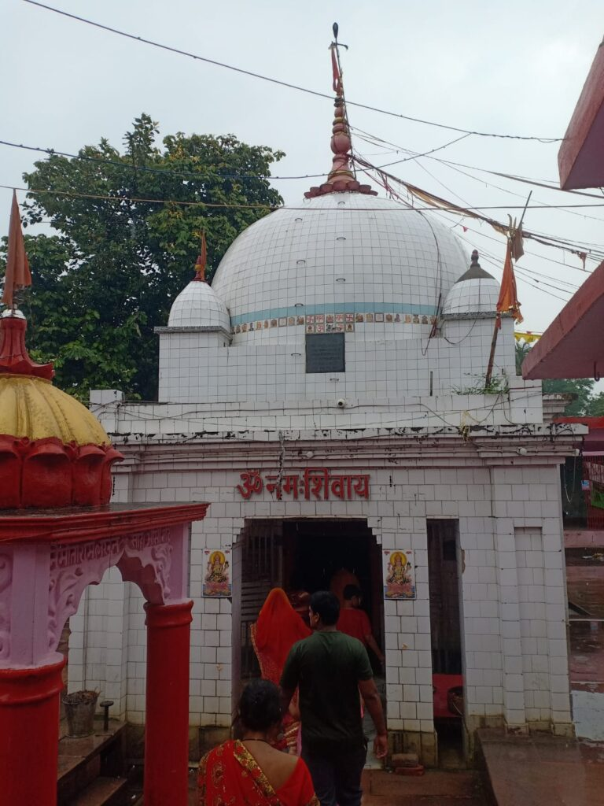

Madhubani town is located in the district with the same name in Bihar. The name of the town Madhubani means ‘Forest of Money’ and the same can be found in abundance over here. Madhubani is popular for its beautiful villages and their ancient art, which is known by the name of Madhubani painting. The town of Madhubani has also been the centre of ‘Maithili’ culture. Madhubani art dates back to several hundred years and was first commissioned by King Janak at the wedding ceremony of his daughter with Lord Rama. Traditionally, Madhubani art was practised only by Madhubani women on mud walls, but now it is practised on cotton textiles, canvas and handmade paper as well. The themes used in Madhubani paintings mostly include Hindu goddesses, gods and nature. The attractions present here include the temple dedicated to Lord Shiva, which is also known by the name of ‘Kapileswarthan’ Temple. The popular fair organised during the time of Maha Shivaratri attracts many tourists. The weather conditions in Madhubani are mainly sub tropical and wet with extremely hot summers and dry winters. The best time to visit Madhubani is during the time of the retreating monsoons in the months of October, November and December. Madhubani is linked with Darbhanga district through National Highway 104. There is a railway station in Madhubani and it is directly connected with Darbhanga Junction. The nearest airport is located in Guwahati, where flights connect major Indian cities of Kolkata, Delhi, Agartala, Imphal, Chennai, Bangalore, Mumbai, Lucknow and Dibrugarh. Taxis are available from Guwahati airport to reach Madhubani.

This is a road side village on Madhubani-Jaynagar road and contains a temple known as Somnath Mahadev. It owes its importance to the annual Sabha held by Maithili Brahmins for negotiating marriages. Many Panjikars who keep the genealogical records of the different families reside here and outside.
 

A village situated nine kilometers from Madhubani District Head Quarter. The village is noted for its Shiva Temple, also known as Kapileswarsthan. Numerous devotees congregate at the temple every Monday and particularly in the month of Shravan. A large fair is also held on the occasion of Maha Shiva Ratri.
The village in Benipatti block is noted for its temple of Bhagwati on the western bank of river Thumne. According to a legend, the renowned Sanskrit poet and dramatist Kalidas was blessed by Bhagwati at this place.
It is a large village situated 5kms from the block headquarter of Pandaul, the village is noted for its temple of Ugaranath and traditional association with famous poet, Vidyapati. As the legend says, Vidyapati was such a great devotee of Lord Shiva that the latter began to serve Vidyapati as his servant named Ugana.